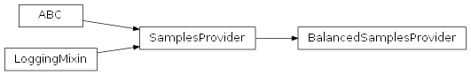
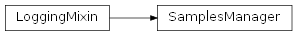
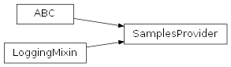
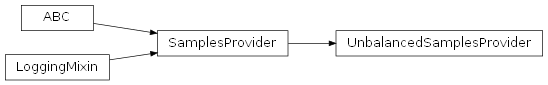

SentimentAnalysis.src.sentiment_analysis.samples package
Submodules
SentimentAnalysis.src.sentiment_analysis.samples.balanced_samples_provider module
balanced_samples_provider.py
Version 1.0, updated on 2025-01-11
- class SentimentAnalysis.src.sentiment_analysis.samples.balanced_samples_provider.BalancedSamplesProvider(samples_manager: SamplesManager)[source]
Bases:
SamplesProviderBalancedSamplesProvider class.
This class manages the balancing of samples to ensure uniform sentiment distribution across samples.
- balanced_samples
The balanced samples for all languages.
- Type:
- get_samples(self)[source]
-> Dict[str, src.data_structures.my_data_frame.MyDataFrame]:
Retrieves and returns samples for sentiment analysis.
- __init__(samples_manager: SamplesManager)[source]
Constructor.
Initializes a new BalancedSamplesProvider instance with a SamplesManager instance.
- Parameters:
samples_manager (SamplesManager) – The SamplesManager instance that called the BalancedSamplesProvider to delegate the retrieval of balanced samples.
- _compose_dataset_name_for_language(language: str) str[source]
Returns a name for a language-specific balanced dataset.
Returns a name for the language-specific balanced dataset that is beeing loaded or created.
Composes the name from the suite’s name, the language and the number of the balanced samples per language.
- Parameters:
language (str) – The language of the language-specific dataset.
- _create_balanced_samples() Dict[str, MyDataFrame][source]
Retrieves or creates balanced samples datasets for all languages.
Retrieves balanced samples for the first language as the reference, and then computes corresponding balanced samples for other languages using this reference.
- Returns:
A dictionary with the balanced samples for all languages, where the keys are the languages and the values are MyDataFrame objects with the balanced samples for the corresponding languages.
- Return type:
Dict[str, MyDataFrame]
Notes
Uses ‘_get_reference_samples’ and ‘_get_other_balanced_samples’ to create or retrieve balanced datasets.
- _filter_by_sentiment(my_df: MyDataFrame, sentiment: str) MyDataFrame[source]
Extracts the rows with the given sentiment from all samples.
- Parameters:
my_df (MyDataFrame) – A MyDataFrame with all sentiment-labeled samples.
sentiment (str) – Sentiment by which to filter the MyDataFrame.
- Returns:
The extracted sentiment-specific samples, in random order.
- Return type:
- _get_other_balanced_samples(reference_samples: MyDataFrame, language: str) MyDataFrame[source]
Creates a balanced sample MyDataFrame based on an existing MyDataFrame.
Given a reference MyDataFrame in one language, another MyDataFrame ist extracted from a data subset in another language, basing the choice of rows on the indices of the reference MyDataFrame.
- Parameters:
reference_samples (MyDataFrame) – The reference sample MyDataFrame to base the balance on.
- Returns:
A balanced sample DataFrame with the same distribution as the reference.
- Return type:
- _get_reference_samples(language: str) MyDataFrame[source]
Creates a balanced sample MyDataFrame to use as reference samples.
Creates a balanced sample MyDataFrame with the specified number of samples per sentiment category to use as reference samples for the rest of the languages.
- Parameters:
language (str) – The language to get the reference samples from.
- Returns:
The collection of reference samples in the given language.
- Return type:
- _load_balanced_samples() bool[source]
Loads the balanced datasets for all languages if available.
Loads balanced datasets that have been saved to disk previously.
Notes
To avoid the possibility of mixing language datasets with different sample ids, loading is done for all languages concerned or for none. If, for one language, no balanced samples can be found, the loading is considered to have failed altogether and all files will have to be re-created.
- _load_balanced_samples_for_language(language: str) MyDataFrame[source]
Loads a balanced dataset for the specified language if available.
- Parameters:
language (str) – The language for which the dataset should be loaded.
- Returns:
The balanced dataset loaded from disk.
- Return type:
Notes
If no data was found on disk, the Dataframe inside the returned MyDataFrame object is empty. The caller should check if the MyDataFrame contains data.
- _reduce_to_max_n_rows(my_df: MyDataFrame, max_n_rows: int) MyDataFrame[source]
Reduces the MyDataFrame to a specified maximum number of rows.
Reduces the DataFrame in the MyDataFrame to a specified maximum number of rows.
- Parameters:
my_df (MyDataFrame) – MyDataFrame containing the DataFrame to reduce.
max_n_rows (int) – Maximum number of rows to retain.
- Returns:
The MyDataFrame with reduced DataFrame.
- Return type:
- _shuffle(my_df: MyDataFrame) MyDataFrame[source]
Randomly shuffles the rows in the DataFrame in the MyDataFrame object.
- Parameters:
my_df (MyDataFrame) – MyDataFrame with the DataFrame to shuffle.
- Returns:
The MyDataFrame with the shuffled DataFrame.
- Return type:
- property balanced_samples: Dict[str, MyDataFrame]
Returns the balanced samples for all languages.
Returns the balanced samples for all languages that the LLM and the data suite have in comman.
- Returns:
The balanced samples, where the key is the language and the value is a MyDataFrame object that contains a DataFrame with the balanced samples for the language.
- Return type:
Dict[str, MyDataFrame]
- get_samples() Dict[str, MyDataFrame][source]
Retrieves the balanced samples for all languages.
Retrieves the balanced samples for all languages that the LLM and the data suite have in comman, either by loading previously saved data from disk or by creating balanced samples anew from the subsets of the active data source suite.
- Returns:
The unbalanced samples, where the key is the language and the value is a MyDataFrame object that contains a DataFrame with the unbalanced samples for the language.
- Return type:
Dict[str, MyDataFrame]
SentimentAnalysis.src.sentiment_analysis.samples.samples_manager module
samples_manager.py
Version 1.0, updated on 2024-12-14
- class SentimentAnalysis.src.sentiment_analysis.samples.samples_manager.SamplesManager(suite: T, languages: List[str] = None, cols: List[str] = None)[source]
Bases:
LoggingMixinSamplesManager class.
- __init__(suite: T, languages: List[str] = None, cols: List[str] = None)[source]
Constructor.
Initializes the SamplesManager class with the specified parameters.
- Parameters:
suite (DataSourceSuite) – Data source suite that provides the samples.
languages (List[str]) – List of languages for which the samples are to be retrieved.
Notes
The languages specified when the class is initialized do not necessarily correspond to all the languages in the data source suite from which the samples are to be retrieved. Instead, they can be a subset of the suite’s languages, depending on the languages the LLM supports.
- _set_balanced_samples() None[source]
Sets the balanced_samples property.
Sets the balanced_samples property with the balanced samples of all languages.
- _set_default_languages() None[source]
Sets the languages of the samples to the languages of the suite.
This method provides a fallback in case the list of languages provided at initialization of the SamplesManager is empty.
- _set_unbalanced_samples() None[source]
Sets the unbalanced_samples property.
Sets the unbalanced_samples property with the complete unbalanced samples of all languages, but removing unwanted rows and columns from the original data subset according to the data offset given in the sentiment analysis configuration.
- property balanced_samples: Dict[str, MyDataFrame]
Returns the balanced samples for all languages.
Returns the balanced samples for all languages that the LLM and the data suite have in comman.
- Returns:
The balanced samples, where the key is the language and the value is the balanced samples for the language.
- Return type:
Dict[str, MyDataFrame]
- property cols: List[str]
Returns the non-query column names in the dataset.
- get_samples(language: str) MyDataFrame[source]
Retrieves the samples for the specified language.
Retrieves the samples for the specified language, depending on the settings in the sentiment analysis configuration.
- Parameters:
language (str) – The language for which to retrieve the required samples.
- Returns:
The samples for the specified language, selected according to the settings in the sentiment analysis configuration.
- Return type:
- get_suite_languages() List[str][source]
Retrieves the languages of the data source suite.
- Returns:
A list of language codes containing the languages of the suite.
- Return type:
List[str]
- property languages: List[str]
Retrieves the languages of the data to manage.
- Returns:
A list of language codes.
- Return type:
List[str]
- property provenience: str
Retrieves the LLM’s name.
- Returns:
The LLM’s name.
- Return type:
str
Notes
Computed property without setter.
- property suite: T
Returns the suite from which to retrieve the samples.
- Returns:
The suite from which to retrieve the samples.
- Return type:
- Raises:
CriticalException – If the suite is not set.
- property suite_name: str
Retrieves the suite’s name from the suite’s class name.
- Returns:
The suite’s name.
- Return type:
str
Notes
Computed property without setter.
- property unbalanced_samples: Dict[str, MyDataFrame]
Returns the unbalanced samples for all languages.
Returns the unbalanced samples for all languages that the LLM and the data suite have in comman.
- Returns:
The unbalanced samples, where the key is the language and the value is the unbalanced samples for the language.
- Return type:
Dict[str, MyDataFrame]
SentimentAnalysis.src.sentiment_analysis.samples.samples_provider module
samples_provider.py
Version 1.0, updated on 2025-05-01
- class SentimentAnalysis.src.sentiment_analysis.samples.samples_provider.SamplesProvider(samples_manager: SamplesManager)[source]
Bases:
ABC,LoggingMixinSamplesProvider class.
This is the base class for the BalancedSamplesProvider and the UnbalancedSamplesProvider classes. It provides logging functionality and defines the methods both classes must implement.
- logger
The logger instance used for logging within the samples provider subclasses.
- Type:
Logger
- get_samples(self)[source]
-> Dict[str, src.data_structures.my_data_frame.MyDataFrame]:
Retrieves and returns samples for sentiment analysis.
- abstract get_samples() Dict[str, MyDataFrame][source]
Retrieves and returns samples for sentiment analysis.
- Returns:
A Dictionary where the keys are the languages and the values are the samples for the respective languages.
- Return type:
Dict[str, MyDataFrame]
- Raises:
NotImplementedError – If the subclass does not implement this abstract method.
SentimentAnalysis.src.sentiment_analysis.samples.unbalanced_samples_provider module
unbalanced_samples_provider.py
Version 1.0, updated on 2025-01-08
- class SentimentAnalysis.src.sentiment_analysis.samples.unbalanced_samples_provider.UnbalancedSamplesProvider(samples_manager: SamplesManager)[source]
Bases:
SamplesProviderUnbalancedSamplesProvider class.
This class manages and provides unbalanced samples from the subsets of the data suite that is set in the SamplesManager class.
- get_samples(self)[source]
-> Dict[str, src.data_structures.my_data_frame.MyDataFrame]:
Retrieves and returns samples for sentiment analysis.
- __init__(samples_manager: SamplesManager)[source]
Constructor.
Initializes a new UnbalancedSamplesProvider instance with a SamplesManager instance.
- Parameters:
samples_manager (SamplesManager) – The SamplesManager instance that called the BalancedSamplesProvider to delegate the retrieval of unbalanced samples.
- _get_sentiment_df(subset: S) DataFrame[source]
Returns the sentiment-relevant columns from the given subset.
Returns a DataFrame containing the sentiment-relevant columns from the given subset of the MAD-TSC suite.
- Parameters:
subset (MadTscStrategy) – A language subset of the MAD-TSC suite.
- Returns:
A pandas DataFrame containing the columns ‘sentence_normalized’, ‘mention’, and ‘polarity’ from the given subset.
- Return type:
DataFrame
- _get_unbalanced_samples_for_language(language: str) MyDataFrame[source]
Retrieves unbalanced samples for the specified language.
Retrieves unbalanced samples for the specified language from the corresponing subset in the data source suite that is set by the SamplesManager.
Throws away unneeded rows at the beginning of the dataset and any unneeded columns.
Otherwise, does not restrict the number of samples because the unbalanced samples serve as the basis for creating balanced datasets of any size.
- Parameters:
language (str) – The language for which the unbalanced samples are to be retrieved.
- Returns:
A MyDataFrame object containing a DataFrame with unbalanced samples in the given language.
- Return type:
Notes
The returned DataFrame includes all available samples without applying balancing logic.
- get_samples() Dict[str, MyDataFrame][source]
Returns the unbalanced samples for all languages.
Returns the unbalanced samples for all languages that the LLM and the data suite have in comman.
- Returns:
The unbalanced samples, where the key is the language and the value is a MyDataFrame object that contains a DataFrame with the unbalanced samples for the language.
- Return type:
Dict[str, MyDataFrame]